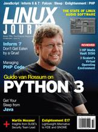

Shutdown Archive web server
Search:
Linux Journal
Issue #174/October 2008

Features
Interview with Guido van Rossum
by James Gray
The new Python 3000 is bounding beyond Python 2. Python creator Guido van Rossum explains why you've got to try it.
A Tale of Two Languages
by Daniel Bartholomew
Not all programming languages are created for automating spreadsheets and device drivers—some, like Inform 6 and 7, were created specifically for making games.
Shell Scripting with a Distributed Twist: Using the Sleep Scripting Language
by Raphael Mudge
A language for practical extraction and reporting with mobile agents?
The Falcon Programming Language in a Nutshell
by Giancarlo Niccolai
Messages can carry anything, including methods or whole Sigma sequences for remote execution in foreign objects.
Indepth
State of the Art: Linux Audio 2008, Part II
by Dave Phillips
Dave Phillips weighs in on the production side of music and sound software for Linux.
The Well-Tempered PHP Developer
by Federico Kereki
PHP developers can get a comfortable, powerful environment with Eclipse plus some well-chosen plugins.
Enlightenment—the Next Generation of Linux Desktops
by Jay Kruizenga
Discover E, and unlock the secrets of Enlightenment.
Columns
Shawn Power's Current_Issue.tar.gz
10 PRINT "Hello World"' 20 GOTO 10
Reuven M. Lerner's At the Forge
Unobtrusive JavaScript
Marcel Gagné's Cooking with Linux
Imaginary Languages
Dave Taylor's Work the Shell
Movie Trivia—Finally!
Mick Bauer's Paranoid Penguin
Interview with Marcus Meissner
Kyle Rankin's Hack and /
Wii Will Rock Linux
Doc Searls' EOF
Why We Need Hackers to Fix Health Care
Reviews
Load Me Up, Load Me Down
by Dan Sawyer
Review of Scalent's Virtual Operating Environment
by Logan G. Harbaugh
In Every Issue
Letters
upFRONT
New Products
New Projects
Archive Index
Shutdown Archive web server
Search:
Copyright © 1994 - 2018
Linux Journal
. All rights reserved.